《视频会议培训教程》读书笔记(第三部分)——音视频系统的搭建
阅读《视频会议培训教程》这本书，所记录的笔记，此部分为笔记的第二部分。 此部分主要讲述音视频系统的搭建。
视频会议系统外围设备
显示设备、电视机、显示器、大屏幕系统、小间距LED、电子白板、音频设备、声源设备（话筒，多媒体播放设备）、调音台、功率放大器、音箱、摄像设备、摄像机、视频展示台、音视频矩阵、中控系统、
音视频系统的搭建
音频扩声系统
音源
CD，DVD，VOD，MP3,电脑，手机等
话筒（传声器）
- 传声器作用是把人声和乐器声不失真地转换成电信号，送往其他音频处理设备，最终实现扩音或录制。
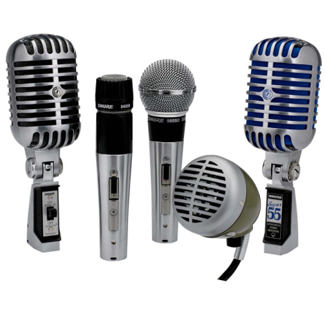 
-
话筒分类：
- 从换能原理上分：
- 动圈式
- 电容
- 从传送方式分：
- 有线话筒
- 无线话筒
- 从指向性上分：
- 无指向形（全指向）
- 双向形（8字形指向型）
- 单项形：
- 心形
- 超心形
- 强指向形
- 从换能原理上分：
-
电容式话筒
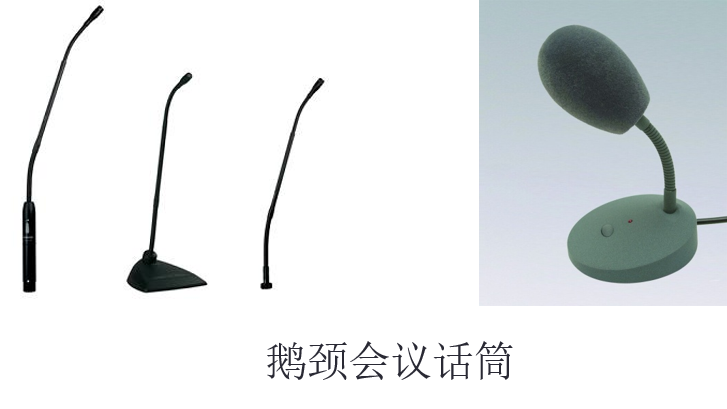 - 原理：依靠电容量变化而起换能作用
- 特点：灵敏度高、动态范围宽、音质好、频率响应宽而平坦、瞬态响应优良，体积小；需要供电电源；设计精密，容易损坏；对使用环境要求高；制造成本昂贵。
- 应用：人声，乐器；远距离拾音；高质量现场音效；录音和广播；多用于会议话筒与要求灵敏度较高的话筒
-
无线话筒
- 它是利用无线电波在近距离内传递声音信号的传声器
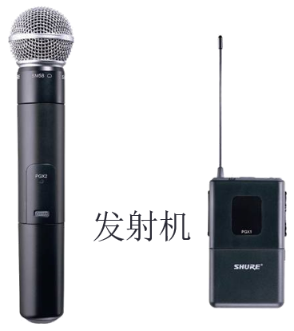 -
分类：
- 按接收方式分为
- 单接收机单频道接收型
- 单接收机多频道接收型
- 双接收机单频道接收型
- 双接收机多频道接收型
- 按载波频率分为
- FM型（88～108MHZ）
- VHF型（又分低频率段30～50MHZ,高频率段150～250MHZ）
- UHF型（又分低频率段300～600MHZ，高频率段700～1000MHZ)
- 话筒从指向性来分为：
- 无指向性（全指向）：为乐队拾音用。
- 心形、超心形：为语言、歌声拾音用。
- 双指向形：录音棚等。
- 强指向形：拾取一定方向的音源，而将环境噪声排斥在拾取空间之外，新闻采访常用
- 按接收方式分为
-
无线话筒的特点：
- 不使用传送电缆，解脱了话筒线对演员的束缚。
- 保密性差，易引进外来干扰信号。并对其他设备产生干扰。
- 有信号失落现象（掉频）。
- 它是利用无线电波在近距离内传递声音信号的传声器
-
无线话筒选择与使用注意事项：
- 频率应尽量选择高频段。
- 接收机与发射机近一些，其间最好没有障碍物。
- 发射机天线一定要顺着人体垂直于地面。
- 接收机天线不与外壳相碰，调整天线的角度与方向，避开死点。
- 注意调整嘴与话筒间的距离。
- 同时使用无线话筒不易过多，以免相互扰频。
- 无线干扰源：无线耳内监听，无线内通，无线对讲机，民用、公共安全发射设备等。
- 电器设备干扰：舞台灯光及灯光控台，大功率电器，DTV(数字电视)。
-
话筒的技术指标：
- 灵敏度
- 话筒在一定强度的声音作用下输出电信号的大小。
- 频率范围(带宽)
- 话筒正常工作的频带宽度，通常以带宽的下限和上限频率来表示。
- 信号噪声比(S/N)
- 话筒有电信号输出时的信号电压与话筒内在噪声电压的比，用dB表示。
- 最大容许声压级
- 以话筒产生0.5%谐波畸变时的声压级作为最大容许声压级。
- 隔振能力
- 瞬态响应
- 话筒对脉冲型声波的跟踪能力。
- 指向特性（方向性）
- 瞬态响应
- 是表示话筒对不同方向的声信号检拾的灵敏度，也可以说是话筒的灵敏度随声波入射方向而变化的特性。
- 灵敏度
-
扩声系统中遇到的问题：
- 反馈 话筒被打开数量太多
- 混响越来越大 直接声音对混响比率下降
-
声音越来越不清晰 背景收入扩大
-
解决方法：
- 采用自动混音台
- 手拉手式连麦方法
-
话筒注意事项：
- 防尘 防潮
- 试音不能采用拍打吹气方法
- 线缆不易过长
- 无线话筒接收机需要适当调节，以免有干扰或出现死角
周边
-
均衡器
- 一种用来对频率曲线进行调节的音频设备
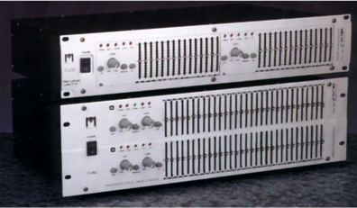 - 作用：
- 校正频率失真
- 改善室内声场
- 抑制声反馈
- 提高语言清晰度
- 提高音响艺术的表现效果
- 一种用来对频率曲线进行调节的音频设备
-
激励器
-
激励器是对音频信号添加谐波成分以改善听感的音频处理设备
-
作用：
- 提高声音的清晰度和表现力，使声音悦耳动听，降低听音疲劳
- 增加声音图像的立体感，改善声音的定位和层次感
- 提高放声的音质，明显改善声音的特性
- 可以强化乐器音色特征，使该乐器更加突出
-
-
压限器
-
压限器又称压缩/限幅器，是用于压缩（或限制）节目信号的动态范围，避免过激失真的音频信号处理设备。
-
作用：
- 抑制信号幅度，保护扩声系统
- 产生特殊的音响效果
- 使音量变化平稳
-
-
效果器
- 效果器是模拟各种声学效果的音频处理设备，它可以弥补自然混响的不足以改变和美化音色，还可以产生各种特殊的音响效果以增强音响艺术的感染力。
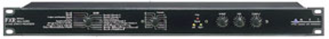 -
混响效果器作用:
- 改变厅堂的混响时间，以增加空间感，提高音响系统的丰满度
- 可制造特殊效果，如山谷、山洞回声效果
- 调节混响声和直达声的比例，可体现声音的远近感和深度感
-
延时效果器作用：
- 利用哈斯效应，解决了声象一致问题
- 消除回声，提高扩声系统的清晰度
- 模拟建筑声场中的近次反射声，改善厅堂的听音条件
- 产生合唱效果
- 对音频信号加工润色，改善其厚度和力度，使声音甜润悦耳
- 与混响器组合成立体混响系统，模拟厅堂效果制造特殊效果
- 效果器是模拟各种声学效果的音频处理设备，它可以弥补自然混响的不足以改变和美化音色，还可以产生各种特殊的音响效果以增强音响艺术的感染力。
功放
- 功放机是将音频的电压信号转换成音频功率信号，驱动扬声器的音频设备。
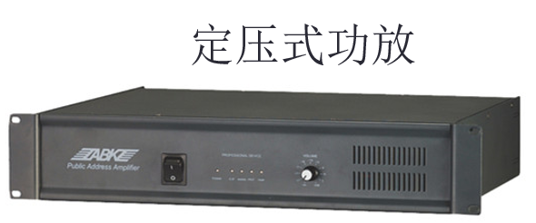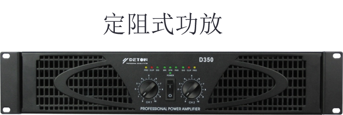 -
功放的主要技术指标：
- 额定功率－连续正弦波功率，在1kHz正弦输入，额定负载下，总谐波失真小于1％的条件下所能输出的功率
- 总谐波失真－输出信号中杂波成分占原量的百分比
- 转换率－反映末级功放管对爆破声信号的反映跟随能力
- 阻尼因子－以1kHz输入信号情况下，输出负载8欧与功放管内阻之比作为阻尼因子
- 频响曲线－增益随频率的变化曲线
-
输出阻抗－额定输出功率的情况下，输出端呈现的阻抗
-
功放的使用
- 使用中注意观察功放前面板指示灯。绿灯、黄灯、红灯。
- 功放在长时间工作后，注意免受振动和撞击，与音箱连接注意极性。
- 在固定系统中，功放输出音量一经确定，一般不要随意调整。
- 在整个扩声系统中电源开启时，功放应最后开启，关机时，应最先关闭
扬声器
-
扬声器俗称喇叭，它作为放声系统的最后一个环节，其任务是把功率放大器输出的电信号能量转换成声音信号。通常把扬声器，音箱和分频器三者的组合称为“扬声器系统”。
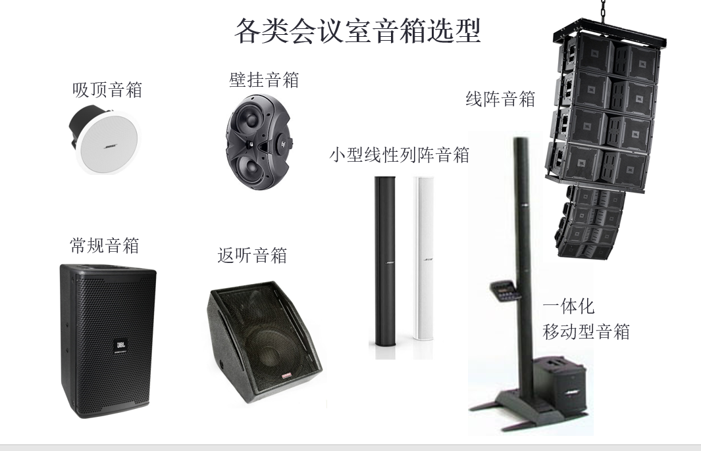 -
扬声器和音箱的分类
- 按声波辐射方向分：直射式（纸盆扬声器）、反射式（号筒扬声器）。
- 按换能原理来分：电动式、电容式、电压式、电磁式。
- 按振膜形状分为：锥形振膜扬声器、平板扬声器、球顶扬声器、号筒扬声器
- 按频率范围划分为：低音扬声器、中音扬声器、高音扬声器、全音域扬声器
- 根据音箱的外表样式又可分为：吸顶安装音箱、壁挂音箱、落地安装音箱。
- 按照用途和功能可分为：有源音箱、监听音箱、主音箱、补声音箱、中置音箱、返听音箱、超低音音箱、室内音箱，室外防水音箱。
- 常用音箱的安装方式有：落地安装、壁挂安装、嵌入安装、隐藏安装、吸顶安装、落地立架安装、顶面悬空吊装
-
性能指标
- 额定功率
- 额定阻抗
- 频响特性
- 灵敏度
- 指向性
- 阻尼系数
-
配件、连接线
-
常用的音频线缆：
- 屏蔽类型：编织活动应用、铝箔固定安装、螺旋固定安装
- 信道结构：单信道、多信道
- 芯线结构：四芯-星绞线、二芯-双绞线
-
常用线缆
- 音频线：RVVPSN 2×0.3、2×0.37、2×0.5，双芯，双芯双股（传输距离建议不要超过200米
- 音箱线：RVTB2×100，2×200，2×300，还有4芯、6芯、8芯（传输距离建议不要超过100米）
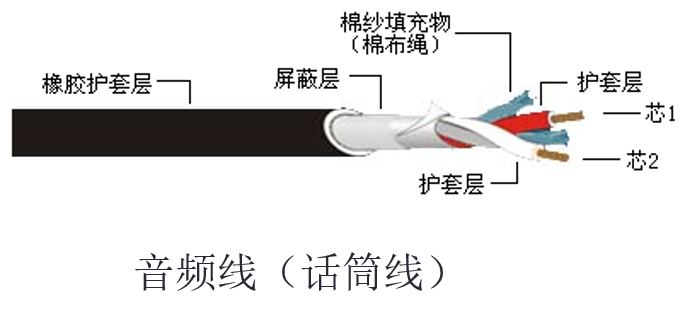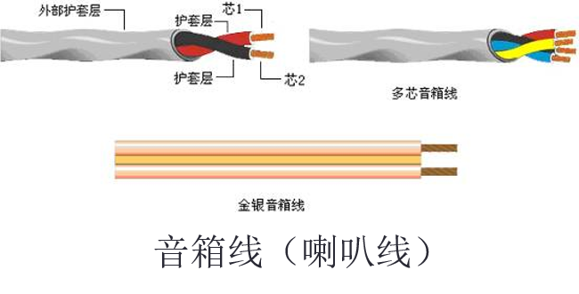
建声与电声
-
建声设计要点：
- 混响时间：
- 混响时间是声学装修中要控制的首要指标，是声学装修的精华所在，厅堂音质是否优美，这项指标占决定因素，也是唯一可以用科学仪器加以测量的厅堂声学参数。
- 共振、回声、颤动、房间驻波、声聚焦、声扩散：
- 会议室内门窗、吊顶、玻璃、座椅、舞台、装饰物、装饰造型、装饰墙面等。
- 四周墙壁、吊顶、地面应做隔声处理 ：阻断噪声源，防止打扰他人。
- 混响时间：
-
大型会议场所设计原则：
- 前场反射
- 后场吸收
- 顶棚强吸
- 门窗隔音
舞台灯光机械幕布系统
灯光
-
面光：安装在观众席顶部上方斜投于舞台，作为舞台正面主光,主要用于照亮舞台前部区域的领导或演员，起到正面照明的作用；
-
顶光：安装在舞台顶部上方垂直往下照射，作用是对舞台纵深的表演空间进行必要的染色及照明；
-
侧光：安装在舞台上方的左右两侧斜投于舞台，作用是从舞台的侧面为演员塑造层次及立体感。可以作为照射演员面部的辅助照明和对舞台空间进行色彩渲染；
-
逆光：安装在舞台顶部上方垂直往下照射，作用是对舞台纵深的表演空间进行必要的染色及照明；
-
天排：安装在舞台天幕前吊杆上，由上向下向舞台天幕的上半部分投光和色彩渲染，通常与地排灯配合使用，使色彩变化更为丰富；
-
地排：安装在天幕前的舞台台面上，由下向上向舞台天幕的下半部分投光和色彩渲染，通常与天排灯配合使用，使色彩变化更为丰富。
幕布
-
舞台幕布是舞台上最能显示气氛的设施之一，它能起到装饰、美化舞台的作用，幕布的配备直接影响到舞台的艺术效果和美感。
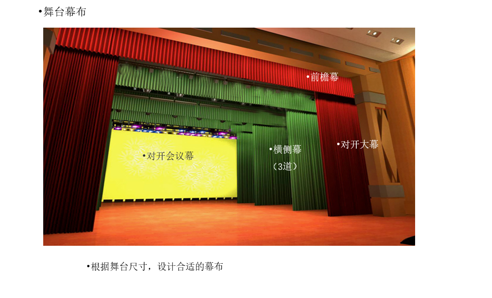 -
大幕：在观众厅与舞台之间起分割作用，是舞台的门户，也是舞台的主要幕布，主要用于会议或演出开始和结束时的开闭，有时也可用作场幕。位于镜框舞台台口的内侧。大幕的颜色和面料可直接影响观众的视觉，要求庄重而典雅。大幕采用枣红色，金丝绒面料，通过三折一的艺术制作，给观众以强烈的立体感。
-
前檐幕:大幕前台口上的横幕，用在舞台上沿的假台口上，挡住观众对舞台前沿上空的视线，它与大幕形成配套，因而衬托了大幕。材料同大幕。
-
二幕：主要为召开会议和演出作后场的隔断或背景作用，突出会议的重要性，烘托会议气氛，显示演出背景，本案设计为天蓝色金丝绒。
-
横条幕：位于镜框舞台上方的幕布。与左右两侧的侧帘幕相配合，起到控制演出空间的视线的作用。
-
侧条幕：位于舞台左右两侧，颜色与横帘幕一致，对舞台表演区域起限制作用，对舞台后部空间进行遮挡，引导、控制观众的视线集中在规定的表演区内。主要是美化舞台，遮挡观众对侧台的视线。
-
会议幕：位于舞台演出空间最后部位，作为会议时的背景幕布。
-
其他注意事项
- 光源及照度
- 隔绝自然光,选择冷光源，安放于被照物前上方45度
- 非摄像区照明度应小于80LUX
- 照明灯色温值建议3500°Kelvin
- 讲话者面部照明亮度建议为500Lux.
- 摄像区域要亮度均匀，不能有阴影区域
- 如果有高照度的灯具，建议采用遮蔽物挡住直射，采用天花反射的方式来取光。
- 照明灯光电路最好能多路控制
- 讲话者最好设置专门的位置与听众区分开
- 会场布置
- 背景颜色不宜采用“白色”和“黑色”
- 墙壁桌椅宜采用浅色调（如灰色和淡蓝）
- 摄像头不宜对着窗户或者门口
- 摄像区域不宜悬挂复杂的图案或者画幅
- 噪音及声学处理
- 会议室应有良好的吸音及隔音设备
- 室内噪音应低于40DB
- 尽量选用专业会议扩音设备，包括音频功率放大器和音箱